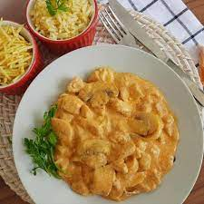

Strogonoff de frango

Ingredientes
- 1 quilo de peito de frango cortado em cubos e temperado
- 1 cebola média picada
- 2 dentes de alho grandes picados
- 1 tomate médio picado
- 1 caixa de creme de leite
- 2 sachês de molho de tomate
- catchup e mostarda (opcional)
- temperos à gosto
- Salsinha e cebolinha
Passo a passo
- Em uma panela grande, doure a cebola e o alho.
- Adicione o tomate e o frango picado e deixe cozinhar até secar a água do frango
- Em seguida, adicione o molho de tomate, tempere a gosto e deixe cozinhar
- Adicione o catchup e a mostarda (Opcional)
- Então, adicione o creme de leite, tempere e deixe cozinhar mais alguns minutos
- Por fim, coloque a salsinha e cebolinha.